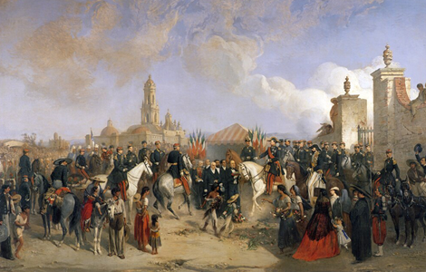
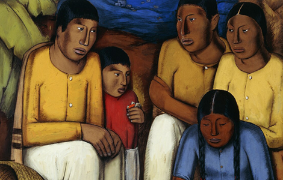
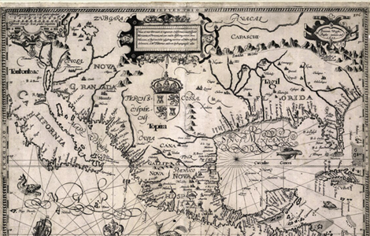

NATIONAL GEOGRAPHIC
'Hispanic' 'Latino' Here’s where the terms come from
HISTORY & CULTURE
- 
- 
- 
Choosing the term Hispanic or Latino as a source of identity is more complicated than just applying a label. A person whose grandparents came from Spain, a person with Indigenous Mexican heritage, and someone from a Portuguese-speaking Brazilian family—along with the roughly 19 percent of the U.S. population that might check “Hispanic” on their census form—could self-identify as both Hispanic or Latino, or neither.
To say that the history of how we use “Hispanic” and “Latino” is complicated is an understatement the terms are both connected to controversy and confusion. Here’s how they came to be, what they refer to, and why many with historic ties to the places Spain and Portugal once colonized say they don’t apply to them.
Ancient origins of Hispanic and Latino
“Hispanic” comes from the Latin term for “Spanish,” Hispanicus; the ancient Romans called the Iberian Peninsula Hispania. In the United States in the 19th century, the term “Hispano” was used to describe people descended from Spaniards who settled in the Southwest in the days before American annexation. But until the 20th century, “Hispanic” was mostly used to refer to things pertaining to ancient Spain.
The term “Latino” also came into being in the 19th century. A shortening of the word latinoamerico, or “Latin American,” it was coined as a variety of former Spanish colonies declared independence around the 1850s. The pan-national, pan ethnic term was a nod toward the similarities of nations once owned by Spain.
An incomplete census
But as Puerto Rican Americans, Cuban Americans, Mexican Americans and others attempted to expand their civil rights work, make policy changes, and obtain funding for their efforts in the 1960s and 1970s, they ran into an obstacle: a lack of data on the status of their communities.
At the time, when the government did collect information on race or ethnicity, there were only three categories: white, Black, and “other.” The government had made one abortive attempt to look at one population of people associated with the Latin American diaspora in the 1930 census, when it listed “Mexican” as a third race, but it was the first and only time the term, which had been intended to measure only people with ties to Mexico, was used.
When civil rights activists looked toward the hard-earned successes of Black activism, they found that an important tool was hard population data on their communities, which they then used as leverage for funding and legislation. “Mexican American activists, though, had difficulty adopting this strategy because the Bureau categorized persons of Mexican descent mainly as ‘white,’ lumping them in with people of European descent,” sociologist G. Cristina Mora writes. In response, the National Council of La Raza, a Chicano civil rights advocacy organization, pushed for a national count of people with ties to the Spanish language and Latin American countries throughout the 1960s.
The dawn of 'Hispanic'
In 1970, the U.S. Census asked people if they identified as “persons of Spanish origin” for the first time, but the census resulted in significant discrepancies because of confusion among people who said they were “Central and South American” when they really meant they were from the central or southern United States. In 1976, Congress passed a law requiring federal departments to collect and publish statistics relating to the economic and social status of people “of Spanish speaking background” who traced their origin to Mexico, Puerto Rico, Cuba, countries in Central and South America, and other Spanish-speaking homelands.
Comments :
- john Very good
- john Very good
Leave a Reply
Your email address will not be published. Required fields are marked*
Related posts:
-
 What was Leonard Bernstein and JFK's friendship really like
What was Leonard Bernstein and JFK's friendship really likeLeonard Bernstein and John F. Kennedy: One was a maestro, the other a president, and both were titans of 20th-century America. They were also unexpected friends whose relationship represented the union of American arts
View article -
 In 1969, the U.S. turned off Niagara Falls. Here’s what happened next.
In 1969, the U.S. turned off Niagara Falls. Here’s what happened next.In the summer of 1969, America brandished its mastery over nature, landing a man on the Moon. Closer to home and perhaps to Americans’ hearts it shut off Niagara Falls.
View article -
 The truth behind the turbulent love story of Napoleon and Joséphine
The truth behind the turbulent love story of Napoleon and JoséphineRevered in equal parts as hero or villain, Emperor Napoleon I led France from the rubble of the Revolution to peace and political stability. At the same time, he undertook a military expansion that at its height saw him control
View article